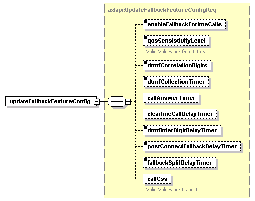

| diagram |  | ||
| namespace | http://www.cisco.com/AXL/API/10.5 | ||
| type | axlapi:UpdateFallbackFeatureConfigReq | ||
| properties |
|
||
| children | enableFallbackForImeCalls qosSensistivityLevel dtmfCorrelationDigits dtmfCollectionTimer callAnswerTimer clearImeCallDelayTimer dtmfInterDigitDelayTimer postConnectFallbackDelayTimer fallbackSplitDelayTimer callCss | ||
| source | <xsd:element name="updateFallbackFeatureConfig" type="axlapi:UpdateFallbackFeatureConfigReq"/> |